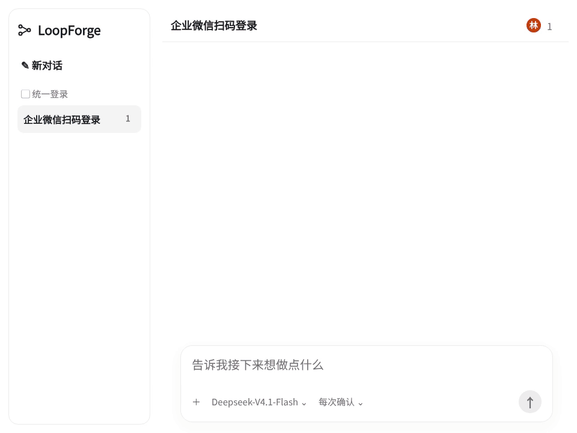
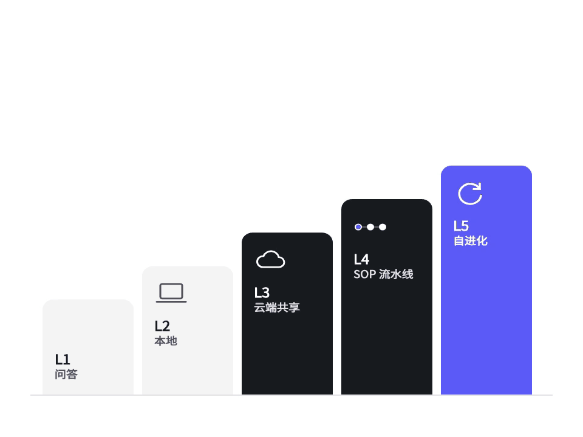

单机 Coding Agent 已经能飞快写出代码，但一旦走进真实研发团队，合盖断流、多人上下文割裂、自由 Vibe Coding 质量失控、日常盯单耗时以及同类问题反复踩坑，很快就会把团队卡在“单兵提效、全局内耗”的瓶颈里。为此，腾讯轻量云团队打造并开源了云端自进化 AI 研发平台 LoopForge——集 7×24 小时云端工作区、多角色共享会话、工程级 SOP 流水线、无人值守自动化与工程级 RSI 自进化于一体。目前平台已在内部 20+ 业务落地使用，单月自动完成 200+ 需求与日常单据交付。本文结合 DeepSeek 的 Super-agent 探索，完整复盘这套体系背后的五步工程演进。
此前，DeepSeek 团队发布了《Super-agent 设计探索：迈向更自主的 Agent 系统》并开源了研究原型。文章开篇点出了一个所有重度使用 Coding Agent 的团队都深有同感的痛点：模型单任务编码已经很强，但一个人同时盯三五个会话就到极限了——单个任务的质量受模型能力限制，而团队的多任务生产力，却被人的注意力死死卡住。
| 对比维度 | DSH Super-agent 原型 | LoopForge |
|---|---|---|
| 核心定位 | 面向个人或轻量团队的异步工单调度原型 | 面向研发团队多人协同与工程交付的云端平台 |
| 交互与入口 | 浅层 Router 只做事件分发，不直接写代码 | Main Bot 主副驾：小改动直接改代码提 MR，大需求派发 SOP |
| 协作拓扑 | 单工单绑定单 Worker 独立干到底（跨角色协同留作开放问题） | 产品 / 设计 / 研发同会话共享工作区 + 五层解耦多角色 SOP 流水线 |
| 中途接管 | 黑盒后台自治为主（中途如何介入与接管留作开放问题） | 共享工作区随时 暂停 / 恢复 / 直接接管，支持在线 IDE 与终端介入 |
| 质量与演进 | 外部 Watchdog 监控 + 人工调整提示词（长程演进留作开放问题） | 内环客观门禁当场自愈 + 外环工程级 RSI 自动复盘开处方改写 SOP |
在构建 LoopForge（github.com/Tencent/LoopForge）的过程中，我们也走过了同样的探索之路。回顾整个系统的演进，我们并不是第一天就设计了一套庞大的架构，而是顺着团队真实落地的痛点，一步步跨过了五道坎：
下面，就按照这五个阶段的演进顺序，把我们在 LoopForge 里的工程思考与实现完整拆解出来。
从本地 Agent 到云端 7×24 小时运行
不管是 Claude Code、Codex 还是 CodeBuddy，最初大家都是在自己的笔记本电脑上打开终端跑 Agent。写单点功能的体验很爽，但一旦任务变长、变多，本地运行的物理瓶颈立刻就显现出来：
- 合上电脑就断流：跑一个耗时半小时的重构或全量测试，人不敢关机、不敢断网，下班合上笔记本任务直接中断。
- 本地环境重、并发受限：同时开三五个需求分支，本地端口冲突、容器把内存吃满，个人电脑根本扛不住多任务并行。
- 换台机器就丢现场：改了一半的代码、还没提交的分支和环境变量全锁在个人电脑里，换台设备或让同事帮忙看一眼都无从下手。
因此，我们的第一步很明确：把 Agent 的工作区和执行环境彻底搬上云端，让它脱离个人电脑 7×24 小时持续运行。为此，LoopForge 构建了三层云端运行底座：
- 云端隔离工作区，全程免本地起环境：每个任务对应一个独立的云端容器或安全沙箱工作区，可同时拉取前后端多个代码仓库并自动切好工作分支。编码、编译、单测、联调与提 MR 全程在云上完成——本地不用再起开发环境，合上电脑下班，任务照样在云端跑到底。
- 存算分离与自有机器一键接入：与 DeepSeek 将控制面与执行环境解耦的思路一致，工作区既可以跑在平台托管的云端容器里，也可以把团队的云主机或闲置开发机一键接入平台，7×24 小时在线接单。底层执行环境与具体编码工具解耦（支持自由切换 Claude Code、Codex、CodeBuddy 等），代码仓库凭证由网关按身份临时注入、任务结束自动擦除，模型全程接触不到明文密钥。
- 自动快照休眠，随时无损唤醒：7×24 小时在线不等于 7×24 小时空烧算力。当云端工作区闲置回收或跨机器切换时，系统自动将未提交的代码修改与分支状态打包保存为云端快照；第二天回来继续对话时，系统自动从快照完整恢复代码现场。
从个人单机到团队云端共享上下文
当 Agent 能在云端 7×24 小时运行之后，使用方式很快从“个人自用”走向了“团队共用”。这时我们撞上了第二道墙：如果每个人还在各自孤立的窗口里跟 Agent 对话，团队的上下文依然是割裂的。
产品经理在自己的窗口里让 Agent 梳理了需求，设计师出了设计稿，到了研发手里，又得重新把背景、仓库分支和设计约束贴给自己的 Agent——单点编码变快了，但团队依然慢在跨角色的上下文搬运上。而如果为了共享上下文，直接把一堆 Bot 拉进群里自由群聊，又会导致消息刷屏、上下文互相污染，在多人对话里放开写权限还容易被他人随口发言误导引发越权操作。
为了让团队在云端真正共享同一个现场，我们做了两件事：
1一个共享会话 + 一个 Main Bot 窗口 + 同一个云端工作区
我们放弃了嘈杂的多 Bot 群聊，坚持“一个对话同一时间只绑定一个云端工作区，且只有一个 Main Bot 对接全组成员”。每次任务对应一个团队共享会话，产品、设计、研发直接进入同一个会话与 Main Bot 对话，成员换人发言时底层自动续接同一个会话上下文，操作的也是背后的同一个真实工作区。

遇到改行文案、调个样式、修个小 Bug 这类日常需求，任何成员直接在共享会话里跟 Main Bot 说一句，Main Bot 当场打开云端工作区改代码、跑验证并一键提交 MR，全组实时可见、无需二次同步。
2独立审查模型代批 + 三挡放行：守住多人共用的安全边界
我们的做法：日常问候、代码只读查询与方案探讨直接自然语言收尾；涉及改代码、跑命令或提交 MR 时，按三挡权限模式精准放行：
这样一来，常规读写与验证命令由独立审查模型代批秒过，只有越界或高危变更才找人拍板——既让产品、设计、研发在同一个云端上下文里畅通协作，又守住了多人共用的权限安全底线。
多人 Vibe Coding 无法保证质量，我们设计了 SOP
当产品、设计、研发都能在同一个云端共享会话里围着 Main Bot 一起 Vibe Coding 之后，改小需求的体验已经非常丝滑。但一旦进入跨角色、长链路的正式迭代，自由 Vibe Coding 的质量失控问题就集中爆发了：
我们意识到：小改动可以靠 Vibe Coding 拼手速，但严肃的研发交付，必须把专业角色能力与团队工程规范固化成带硬门禁的 SOP（标准作业程序）。在 LoopForge 里，我们通过三项核心设计把自由 Vibe Coding 升级为工程级 SOP 流水线：
1五层标准解耦：把团队最佳实践与专家角色固化成可复用资产
我们不再靠临时提示词碰运气，而是在架构层面将专业岗位能力与 SOP 流程拆解为五层独立标准：
这些沉淀下来的专业角色资产全组共享：正式需求可以直接串成 SOP 流水线自动流转（每个节点只加载该岗位专属的规范与技能，并自动屏蔽仓库里杂乱的个人本地配置）；而在日常共享对话中，成员也可以随时按需 @专家角色 进行独立的只读咨询，获取架构或评审建议并同步给 Main Bot 统筹处理，做到专业能力共享、平时绝不乱插嘴。
2Main Bot 主副驾三层秩序：既能自动驾驶，又能随时丝滑接管
引入 SOP 后，并不意味着人失去了掌控感。我们把协作收敛为可进可退的“人 ↔ Main Bot ↔ SOP 节点”三层主副驾结构：
当 SOP 正在自动运行时，共享会话上方实时展示节点流水线，点击任意节点即可查看它的思考过程与执行日志。如果中途发现方向偏了，不需要去底层乱插话，除了可以在在线编辑器或终端里直接修改外，只需跟 Main Bot 说一声，就能按三种方式受控接管：
3工程级 RSI：内环门禁当场自愈 + 外环复盘递归自改进
前沿 AI 领域一直在探索 RSI（Recursive Self-Improvement，递归自我改进）。但在真实的研发团队里，靠重新训练模型权重既不现实也太慢；我们真正落地的是工程级 RSI——让系统的执行轨迹反哺系统自身的 SOP、角色规范与验证门禁，形成“执行 → 客观检验 → 复盘诊断 → 改写流程 → 下一轮更准”的进化飞轮：
- 单次运行内环（客观门禁当场自愈）：过去 Agent 写完代码全凭主观感觉声称“已改好”，报错还要人把日志贴回去让它重改。现在每个 SOP 节点内置编译、单测、代码规范等客观验证门禁——不通过绝不放行，Agent 拿着真实报错自动进入纠错循环当场修复（同时设有重试上限防止死循环），把低级错误直接消灭在节点内部。
- 跨运行外环（递归复盘与资产自进化）：传统流水线是静态的，这次踩过的坑下次还会照样再踩。在 LoopForge 中，每当一条 SOP 运行结束，复盘引擎会自动回溯全链路轨迹（各节点耗时、失败门禁、无效重复尝试与返工原因），给出 0~100 分健康度评分，并让 Agent 自己为 SOP 和角色开出结构化的“改进处方”：
告别盯单救火：定时任务与 Issue 全链路自动化
走完前三步，团队做重点需求时已经有了云端工作区、共享会话和高质量的 SOP 流水线。但任何一个处于快速迭代中的真实系统，除了主线大需求之外，每天还会源源不断地冒出大大小小的线上 Bug、体验瑕疵、技术债与零散 Issue。
过去处理这些日常 Issue 极其耗费时间和人力：单个问题看起来都不算大，但架不住数量多、来得碎——研发每天要花大量精力去需求池看单、认领、拉分支、定位修复、跑测试、提 MR；哪怕用上了 SOP，如果几十个零散 Issue 还要靠人一个个手动创建会话去触发、盯进度、解合并冲突，核心研发的整块心流依然会被切得粉碎。
我们思考的是：既然 SOP 已经具备了标准化的修复与验证能力，为什么不能让系统自己去巡检拉单、自己排队修 Bug、自己把改好的代码合并好送到人面前？但在把海量日常 Issue 彻底推向全自动处理的过程中，我们必须解决三个真实的工程卡点：
- 人工盯单派单成本高：缺陷单和体验问题散落在需求平台与代码仓库里，靠人肉巡检、手动复制上下文来启动 Agent，本身就是沉重的机械劳动。
- 多个 Issue 并行修复极易撞车冲突：十几个 Bug 单在后台同时改完，往同一个目标分支合并时频繁撞上代码冲突，最后还得把研发拉回来手动切分支解冲突。
- 个别卡点单子会堵死整条自动流水线：批量自动处理时，只要有一两个复杂 Issue 停在关键门禁等待人工确认，如果一直占着后台执行资源，后面的日常单子就全被堵住了。
为此，我们在第四阶段构建了定时巡检与 Issue 全链路自动化体系，把海量日常 Bug 与零散需求的消化过程彻底变成“后台无人值守流水线”：
总结：从个人工具到自演进研发组织的五步跨越
回看 LoopForge 的演进历程，如果借用自动驾驶的 L1~L5 分级来衡量研发团队落地 Agent 的深度，这五步恰好勾勒出了一条清晰的工程进阶路径：

回顾整个探索过程，我们最大的一个体会是：让 Agent 真正成为研发团队里的靠谱同事，从来不是靠写一段更长的提示词，也不是靠拉一个热闹的多 Bot 群聊，而是把“人的工程经验”转化为“系统的运行秩序”。
在单机时代，我们把 AI 当作顺手的副驾驶，追求的是写出一段漂亮代码的即时爽感；但当它真正进入团队工程现场，瓶颈很快就从“模型会不会写代码”，转移到了环境会不会断、上下文怎么对齐、质量怎么兜底、以及人怎么从繁琐的调度里解放出来。
我们走过的这五步，本质上是一次次把“对人的依赖”沉淀为“工程机制”的过程：用云端工作区解开个人电脑的物理束缚，用共享会话与独立代批消弭跨角色的沟通鸿沟，用带客观门禁的 SOP 管住自由 Vibe Coding 的失控风险，用定时自动化实现后台无人值守，最后用工程级 RSI 跨运行复盘让整套体系自己进化。当团队每一次踩坑的教训都能自动沉淀为下一轮运行的门禁与规范时，我们收获的就不再只是几个会写代码的 Bot，而是一套真正属于团队自己、且每天都在自我进化的研发系统。
立即体验与支持
目前，LoopForge 已正式开源。我们把云端工作区调度、多人 Main Bot 共享会话、五层标准 SOP 编排、客观门禁自愈、定时与 Issue 全链路自动化以及工程级 RSI 复盘进化的完整实现全部开放出来，希望能为正在探索团队级 AI 研发落地的同行提供一份可直接上手、可二次定制的工程底座。
如果你也曾为“Agent 这次又跳过了测试”而头疼，或者希望团队的 AI 研发少一点重复交代、多一点经验积累，现在就打开 https://loopforge.cn/demo/ 浏览平台真实界面与交付记录，或者按照 GitHub README 中的最新部署方式运行 ./start.sh，部署一套属于你们团队的 LoopForge，跑通自己的交付流程！
如果 LoopForge 对你有帮助，欢迎前往 GitHub 点亮一颗 Star，也欢迎提交 Issue 与 PR，和我们一起定义 AI 时代的软件交付方式！
- GitHub 仓库：https://github.com/Tencent/LoopForge
- 官网：https://loopforge.cn
- 平台在线预览：https://loopforge.cn/demo/
扫描下方二维码加入 LoopForge 交流群：